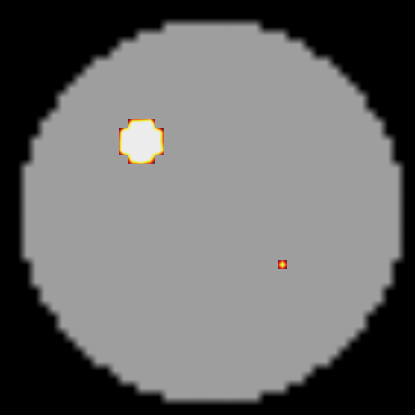
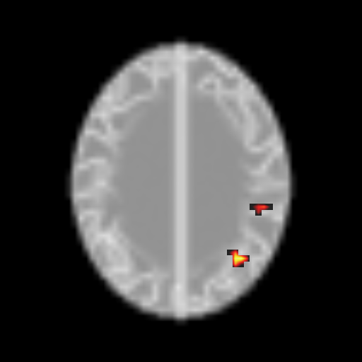
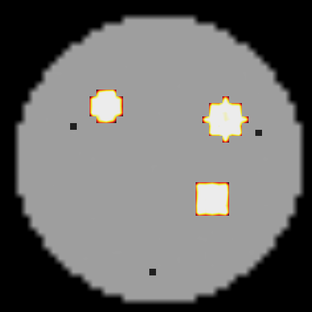
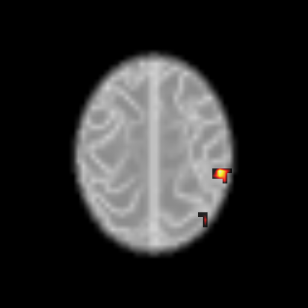

1 · SPM
T-score · Task > Rest
6 slices · double-click a tile for one slice

z 1/6
z 2/6
z 3/6

z 4/6

z 5/6

z 6/6
2 · Slice
T-score · Task > Rest · z 5/6
Hot · blending 60 %
Hot · blending 60 %
PHANTOM^SYNTHETIC
NMR-PHANTOM-001 · 2026-01-01
NMR-PHANTOM-001 · 2026-01-01
T 3.1–12.0 · cluster ≥ 10 vox
Underlay mean BOLD · window auto
Underlay mean BOLD · window auto
Zoom 100 %
3.0 × 3.0 mm · 64 × 64
APRL
3.0 × 3.0 mm · 64 × 64
3 · Cluster
Largest 3D cluster · 27 vox
Cluster mean
Task blocks